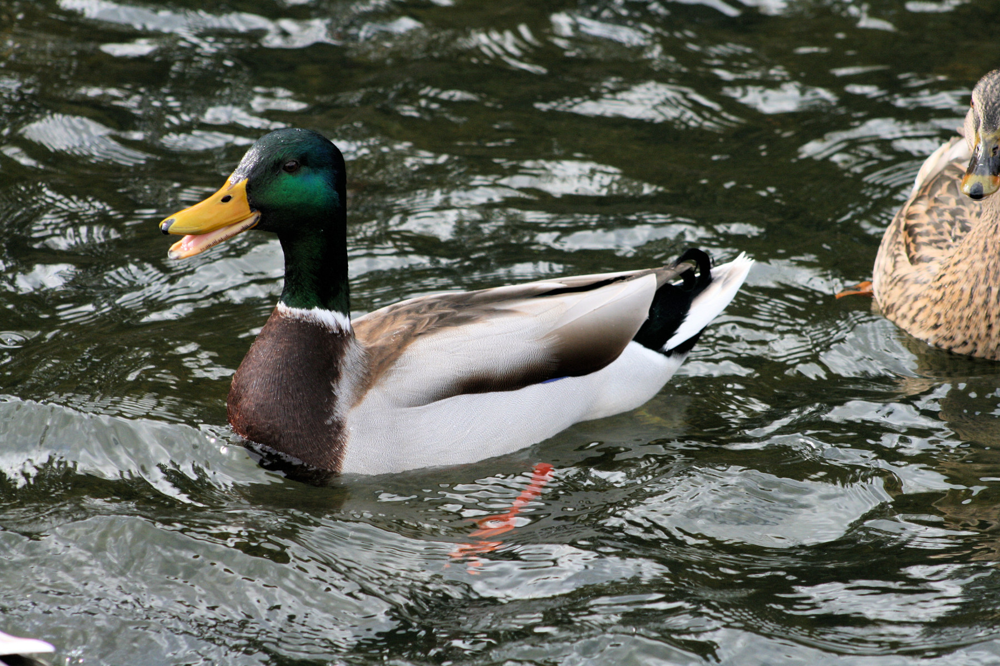
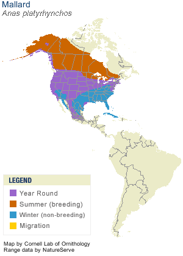

Neat facts
- Mallards are ancestors of nearly all domestic duck breeds.
- They are generally monogamous, forming pairs in the fall, and courting in the winter.
- Migrating flocks have been estimated travelling at nearly 89 km/h; they are strong fliers.
| Binomial Name | Anas platyrhynchos |
|---|---|
| Length | 50-65 cm |
| Wingspan | 82-95 cm |
| Weight | 1000-1300 g |
| Habitat | Wetlands such as marshes, bogs, riverine floodplains, lakes, reserviors, ponds, city parks, farms, and estuaries |
| Food | Seeds, aquatic vegetation, aquatic insect larvae, earthworms, snails, freshwater shrimp, and whatever else they can forage |
| Nest Location | Dry land close to water, concealed by overhanging grass or other vegetation |
| Nest Size | 1-6 inches deep, 6-9 inches across |
| Egg Description | Unmarked creamy to grayish or greenish buff |
| Clutch Size | 1-13 eggs |

Softly quacking on a bright sunny day, these mallards are peaceful to watch. They like to bob in the water searching for food.